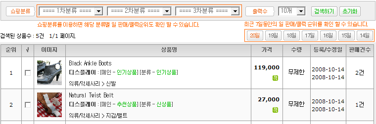

판매/클릭순위
01. 총판매순위 : 판매된 상품에 한해 판매건수 및 판매순위를 확인 할 수 있습니다. 검색조건 중 쇼핑분류를 이용하면 해당 분류별 총 판매순위도 확인 할 수 있습니다.
02. 한달간판매순위 : 한달간 판매된 상품에 한해 판매건수 및 판매순위를 확인 할 수 있습니다. 검색조건 중 쇼핑분류를 이용하면 해당 분류별 한달간 판매순위도 확인 할 수 있습니다.
03. 한주간판매순위 : 한주간 판매된 상품에 한해 판매건수 및 판매를 확인 할 수 있습니다. 검색조건 중 쇼핑분류를 이용하면 해당 분류별 한주간 판매순위도 확인 할 수 있습니다.
04. 일판매순위 : 한주간 해당일에 판매된 상품에 한해 일 판매건수 및 판매를 확인 할 수 있습니다. 검색조건 중 쇼핑분류를 이용하면 해당 분류별 일 판매순위도 확인 할 수 있습니다.
05. 총클릭순위 : 클릭된 상품에 한해 클릭건수 및 클릭순위를 확인 할 수 있습니다. 검색조건 중 쇼핑분류를 이용하면 해당 분류별 총 클릭순위도 확인 할 수 있습니다.
06. 한달간클릭순위 : 한달간 클릭된 상품에 한해 클릭건수 및 클릭순위를 확인 할 수 있습니다. 검색조건 중 쇼핑분류를 이용하면 해당 분류별 한달간 클릭순위도 확인 할 수 있습니다.
07. 한주간클릭순위 : 한주간 클릭된 상품에 한해 클릭건수 및 클릭순위를 확인 할 수 있습니다. 검색조건 중 쇼핑분류를 이용하면 해당 분류별 한주간 클릭순위도 확인 할 수 있습니다.
08. 일클릭순위 : 한주간 해당일에 클릭된 상품에 한해 일 클릭건수 및 클릭순위를 확인 할 수 있습니다. 검색조건 중 쇼핑분류를 이용하면 해당 분류별 일 클릭순위도 확인 할 수 있습니다.
